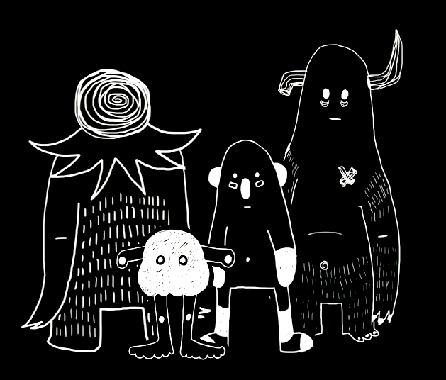

This idea was born out of an animation I did on my first semester as a second year student in Altos de Chavon, there I talked about depression and what it meant to me; I named it "Depression Is...". The animation had a character named Lump, he was a little monster who for me lives inside all of us. In my animation ‘Lump’ would act out the scenes I would narrate.
As I began to work more and more on the project, Lump grew on me to the extent that I wanted to be with him all the time, so I decided that a I wanted to make him come alive, the best idea was to bring him to life as a plush toy. Every one loved him, so little by little I decided to make his family even bigger.
With these plush toys, I want to show the world that theres nothing to be afraid of, that there are a lot of people who go through these same processes and feelings. I also want to show the viewers that it is normal that he/she, a friend or family member is going through these situations and that it is not a negative thing to be or feel that way.
